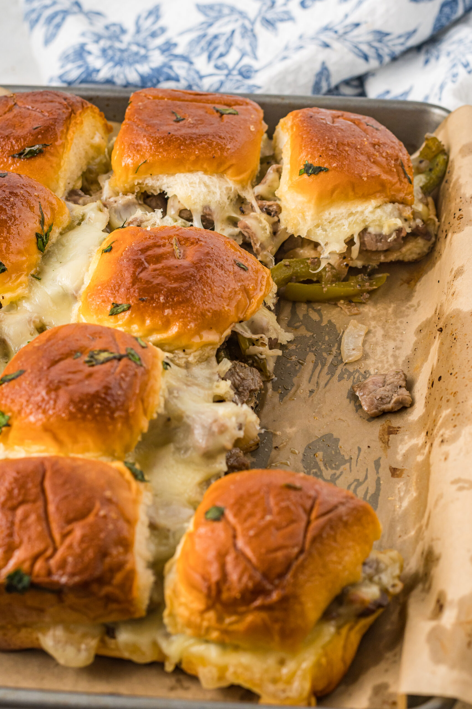

Philly Cheesesteak Sliders

These philly cheesesteak sliders make for an appetizing and convenient meal at a low cost! Presented on radiently glowing buns that are the Kings Hawaiian Sweet Rolls is the classic philly cheesesteak. This recipe is great for family gatherings to woo and ahh guest with its aromatic smell and gorgeous presentation or just for a quick fullfillng meal.
Ingredients
- Your choice of thinly slice steak meat. But for this ill refer to Steak-Ummm Sliced Steak (15oz).
- Kings Hawaiian Sweet Rolls
- Olive Oil
- White Onion
- Green Pepper
- Provolone
- Salt
- Black Pepper
- Garlc Powder
- Parsley Flakes
Steps
- Add 1-2 Tbs of olive oil to a pan and cook the green pepper, onion, and thyme for about 5 minutes on medium heat
- Add the steak to the pan and cook until the meat is no longer pink
- Heat the oven to 350 degrees and spray a pan with non stick cooking spray
- Cut the sheet of hawaiian rolls horizantally and spread the steak and veggies across evenly
- Add provolone cheese on top of the steak then place the top half of the hawaiian rolls back on
- In a bowl melt some butter and then mix in some worcestershire sauce and brown sugar and brush the mixture over the rolls and sprinkle some parsley
- Bake in the oven for 15-20 minutes then remove
- (optional) Sprinkle some parsley on top
- Then Serve!